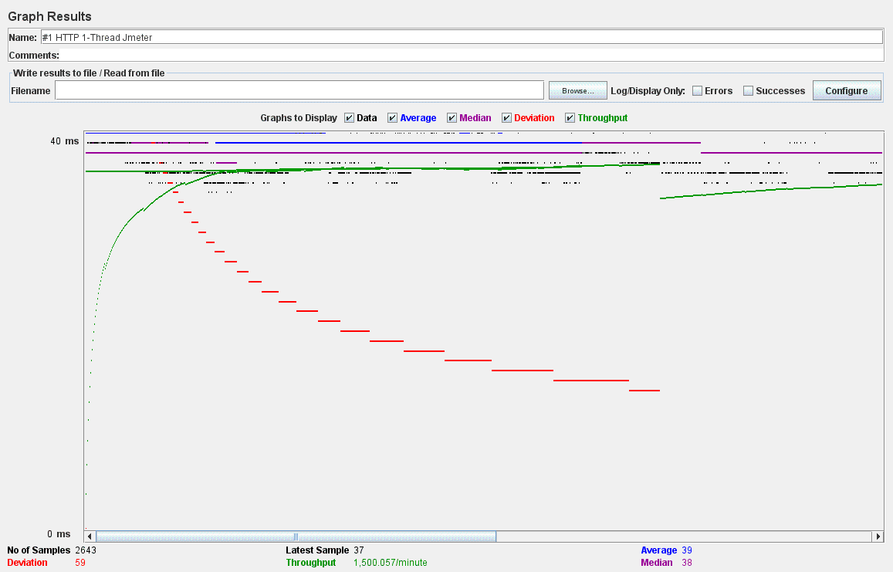
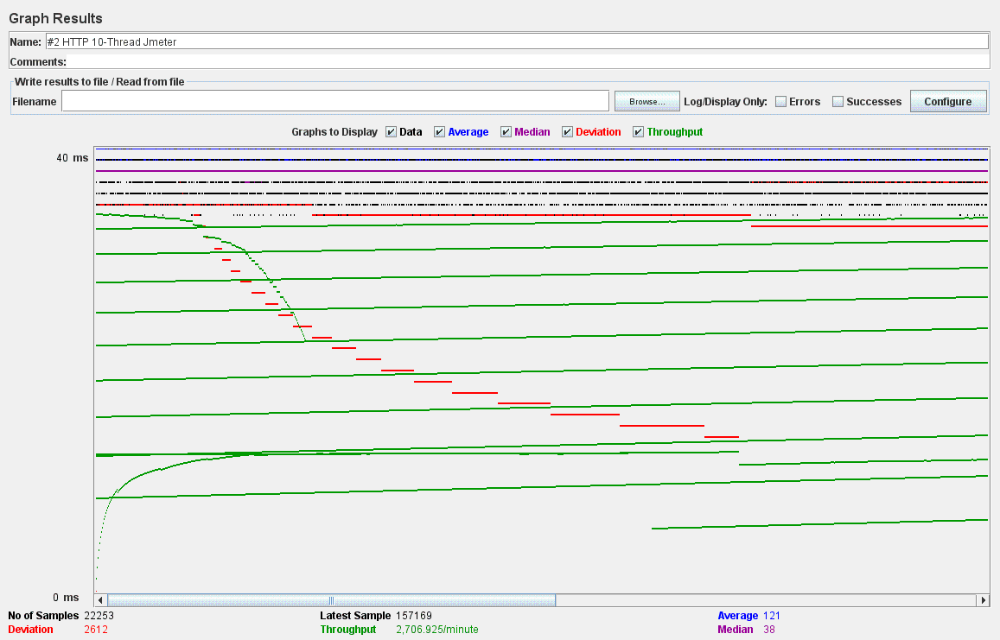
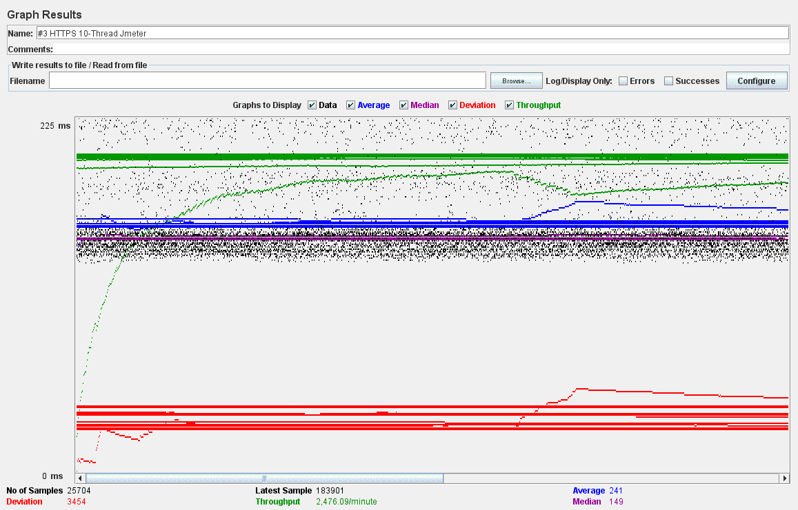
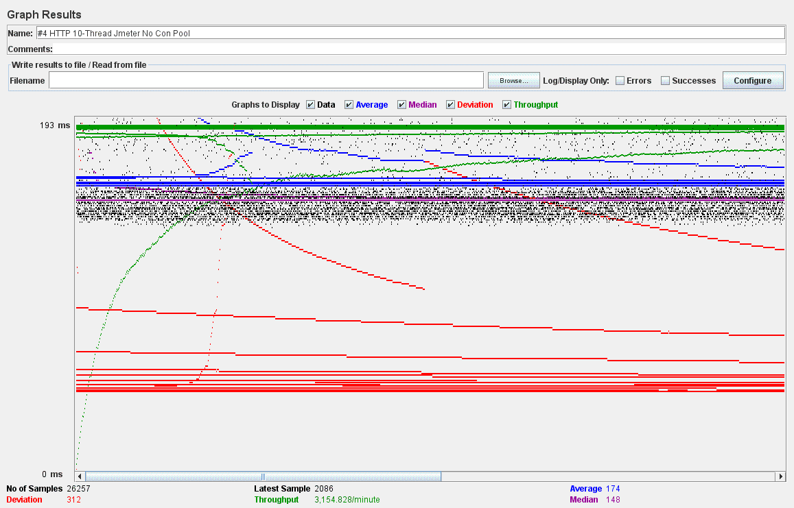
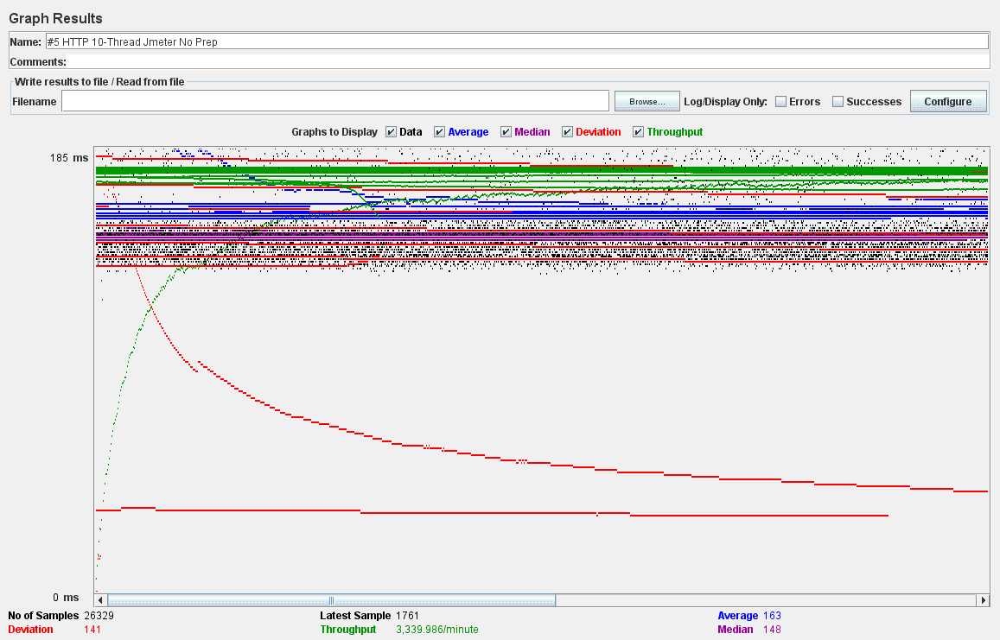
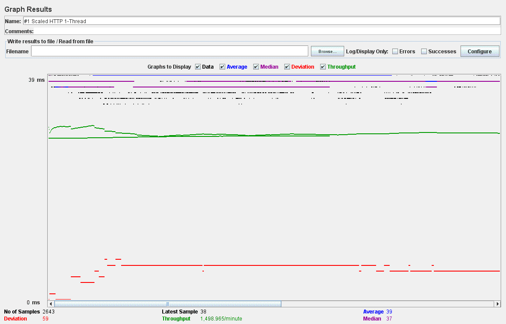
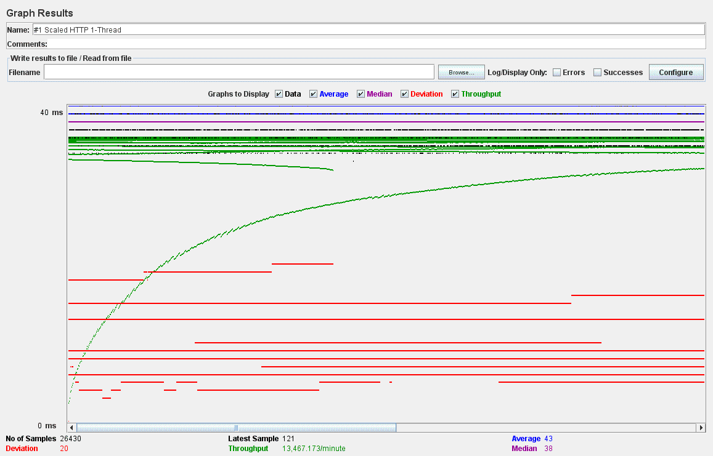
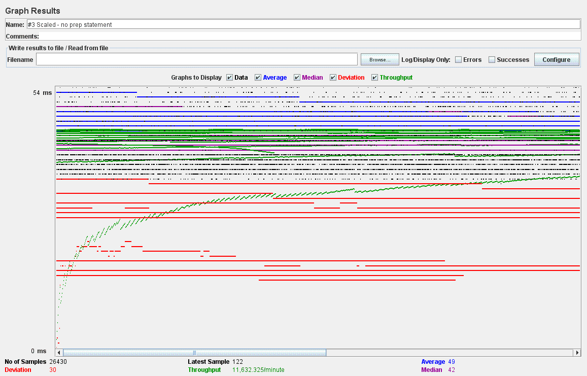
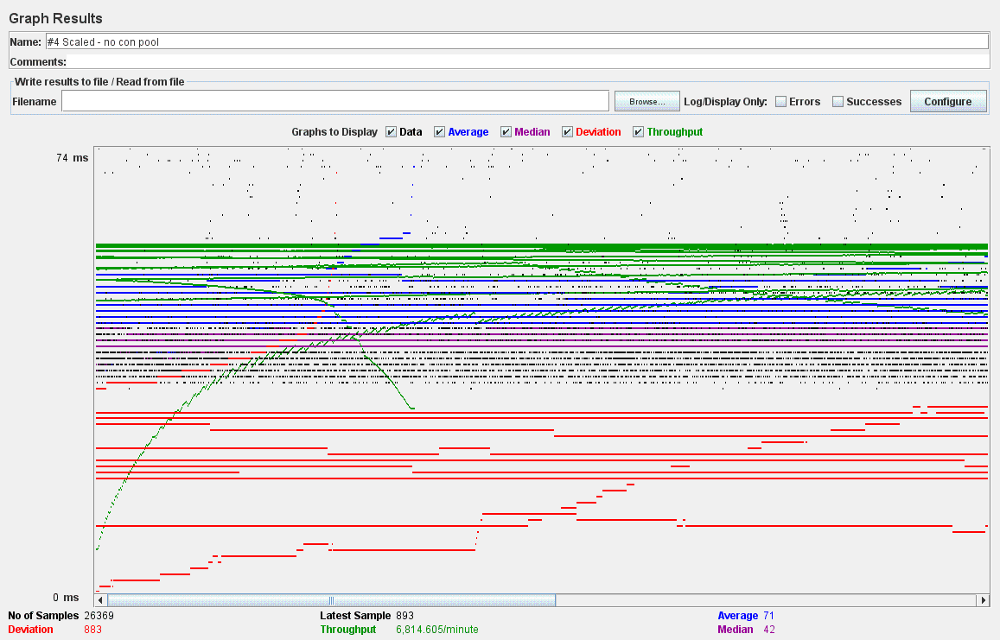

| Single-instance version cases | Graph Results Screenshot | Average Query Time(ms) | Average Search Servlet Time(ms) | Average JDBC Time(ms) | Analysis |
| Case 1: HTTP/1 thread |  | 39 ms | 0.575855 ms | 0.546925 ms | Running the queries using a single thread with connection pooling and preparedstatement is relatively fast compared to other cases. Because there's way less overhead in concurrent data access and http request. |
| Case 2: HTTP/10 threads |  | 121 ms | 0.851123 ms | 0.831007 ms | When multiple threads are performing queries concurrently, the payload on the request is huge; thus, it slows down the average query time, and other measurements. However, connection pooling and use of preparedstatements allows query processing to run faster than case 4 and 5. |
| Case 3: HTTPS/10 threads |  | 241 ms | 0.728700 ms | 0.712087 ms | Using HTTPS increases the average query time, because there's an overhead in SSL handshaking and encryption process. |
| Case 4: HTTP/10 threads/No connection pooling |  | 174 ms | 0.929106 ms | 0.900128 ms | Processing queries with multiple threads concurrently increases the average time for all three measurements as tested in Case 2. Doing it without connection pooling only makes it worse; compared to case 2, all three measurements are increased. |
| Case 5: HTTP/10 threads/No prepared statements |  | 163 ms | 0.931903 ms | 0.954210 ms | Without Prepared Statements, the average query time is about the same as case 4. However, the average JDBC processing time increases. |
| Scaled version cases | Graph Results Screenshot | Average Query Time(ms) | Average Search Servlet Time(ms) | Average JDBC Time(ms) | Analysis |
| Case 1: HTTP/1 thread |  | 39 ms | 0.562316 ms | 0.547729 ms | Processing queries with only 1 thread doesn't result in much difference between scaled and unscaled instances. |
| Case 2: HTTP/10 threads |  | 43 ms | 0.672130 ms | 0.651281 ms | The throughput is much higher with scaled version. As displayed in the graphs, the throughput for this case is 2706 queries/min without scaling, and 13467 queries/min with scaling. The average querey processing time is reduced dramatically as well. |
| Case 3: HTTP/10 threads/No prepared statements |  | 49 ms | 0.791993 ms | 0.845211 ms | As per usual without prepared statements, time spent on JDBC execution is longer than other cases. The average query processing time is increased slightly. Throughput is higher compared to the unscaled instance's case 3. |
| Case 4: HTTP/10 threads/No connection pooling |  | 71 ms | 0.929911 ms | 0.931871 ms | The average query processing time increased compared to Case 2. However, it's still a lot lower compared to the unscaled version. The throughput is 6814 lower than case 2's throughput, but still much higher than the case 2 from the unscaled instance. |